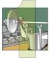

Copyright © This course contains materials from "Survivability and Information Assurance" (copyright 2005 Carnegie Mellon University) with special permission of the Software Engineering Institute at Carnegie Mellon University.
- Table of Contents
- 1. Principle 2: Everything Is Data
- 2. Reading Assignments
- 3. Everything is Data
- 4. Learning Outcomes
- 5. Topics
- 6. Topics
- 7. Everything is data
- 8. Topics
- 9. Information Security Model
- 10. Topics
- 11. Controlling access to data on a host can be achieved through
- 12. Operating System ACLs
- 13. Network ACLs
- 14. Data Confidentiality - Encryption
- 15. Ciphers
- 16. Keys (a.k.a. Cryptovariables)
- 17. Types of Encryption
- 18. Symmetric Encryption
- 19. Asymmetric Encryption
- 20. Symmetric vs. Asymmetric
- 21. The Hybrid Model
- 22. Summary: Confidentiality
- 23. Topics
- 24. Data Integrity
- 25. Hash Function
- 26. Hash Function Examples
- 27. Where to Use Hash Functions
- 28. Hash Example
- 29. Summary: Data Integrity
- 30. Topics
- 31. Definitions and Concepts
- 32. Levels of Availability
- 33. Identifying SPOF
- 34. Identifying IT Personnel SPOF
- 35. Identifying SPOF Dependencies
- 36. Best Practices for Ensuring Availability
- 37. Host Availability Strategies
- 38. Network Availability Strategies
- 39. Management Strategies
- 40. Summary: Availability
- 41. Topics
- 42. CIA Discussion
- 43. Summary: Everything Is Data
- 44. Exam
1. Principle 2: Everything Is Data

Everything in and around a computer system and network infrastructure component is data. This perspective is useful in considering the survivability of a system. The attributes of data that need to be considered and secured are the so-called CIA Triad: Confidentiality, Integrity, and Availability. This module will focus on identifying and understanding the places where data resides and the general techniques that should be used to protect the CIA attributes.
This module should take 7 hours, including lecture and demonstrations.
The required reading must be done in advance of this class and students will be quizzed on the materials.
2. Reading Assignments
Required readings:
File Cabinets and Pig Latin: Guards for Information Assets [Rogers 01b]
Can You Prove It? [Rogers 03a]
Introduction to Cryptography - Chapter 1: The Basics of Cryptography [PGPI]
Recommended readings:
3. Everything is Data
This module introduces the idea that data in its many forms (user documents, databases, programs, operating systems, network control information, etc.) are all important components with respect to information security and the role they play in system survivability. Topics to be discussed include using an information security model to explore securing data from unauthorized use, ensuring that data has not been accidentally or intentionally modified, and taking steps to make sure the data is available in a timely fashion.
4. Learning Outcomes
How data supports the enterprise's mission
Processes and issues related to data
Confidentiality
Integrity
Availability
After completing this module, you will be able to describe and apply these data concepts.
5. Topics
Everything is data
Information security model
Achieving Data Confidentiality
Achieving Data Integrity
Achieving Data Availability
Data Review and Summary
This is the set of topics for this module.
6. Topics
Everything is data
Information security model
Achieving Data Confidentiality
Achieving Data Integrity
Achieving Data Availability
Data Review and Summary
7. Everything is data
"We have now reached the stage where virtually anything we want to do in the field of communications is possible: the constraints are no longer technical, but economic, legal, or political."- Arthur C. Clarke," How the World Was One," New York, NY, Bantam Books, pg. 192
Are we living in the era of information technology or data technology? Data consists of quantitative symbolic representations, while information presupposes some entity who receives it in the form of data can interpret it and associate it with known concepts. A human being cannot be characterized as a collection of data, but it is fair to say that the textual representation of an individual's DNA is data. For purposes of this curriculum, the distinction between the terms data and information is not important, and the term data will be used.
Until recent years, the term data was just associated with numbers and documents used by computer applications. However, the convergence of the digital world and the analog world has changed this perspective. The following from NetTec Services ADC [NETTEC] summarizes some essential points on the different ways data can be viewed by an enterprise:
When you think about it, everything is data. This simple statement sums up the message of communications convergence. No longer will data, voice and video be delivered over different systems. Now "data data", voice data and video data can be sent over one WAN infrastructure, using components that are familiar to every IT manager: Wintel servers (Intel processor based servers running a Windows Server Operating System), Cisco Routers and Cisco Ethernet Switches.
The data-data portion of communications has been going on for years, but communication convergence expands the new capabilities with secure Virtual Private Networks, sophisticated, yet easy-to-manage firewalls and e-mail that can carry voice messages. The voice data portion of communications is the most exciting advancement. Using standard Wintel servers, Cisco's CallManager and Unity solutions allow IT staff to manage communications at many levels.
IP Telephony puts a powerful, full-featured phone set on the desktop, while eliminating tolls for long distance calls between offices, allowing all users on a WAN to extension dial anyone at any office, and establishing a level of redundancy that avoids the problem of system failure with the older, proprietary PBX technology.
Everything is data. To the IT manager this means that your staff can now manage all of your company's communications. It also means that the same levels of redundancy that have safeguarded data are now extended to voice and video. RAID technology, regular backups, redundant components, remote monitoring and management tools, redundant servers, and every other tool that has kept Mission Critical data processing LAN/WANs up and running is now available to safeguard voice data and video data.
Everything is data. You will not have to deal with a proprietary PBX at your office and any remote locations.
Everything is data. The same security features that safeguard your data-data will now safeguard your voice data and video data.
From a security and system survivability standpoint, the concept of data-data needs expanded beyond the assets and critical information used by an enterprise to also include the control information that enables the computer system and network to act as one. Whether the topic is IP addresses, checksums, TCP/IP routing messages, spreadsheets, databases, or word processing documents, everything is truly data. However, not all data needs to be treated the same with respect to protecting its confidentiality, integrity, and availability. The goal of the Survivability and Information Assurance curriculum is for system administrators to explore the numerous vulnerabilities inherent in computer systems and networks, and to learn how to effectively deal with them.
8. Topics
Everything is data
Information security model
Achieving Data Confidentiality
Achieving Data Integrity
Achieving Data Availability
Data Review and Summary
9. Information Security Model
The security of information systems can be characterized in a variety of ways. The model depicted above, adapted from the National Training Standard for Information Systems Security Professionals [NST 94], characterizes information security in three dimensions:
Information security properties: It is generally accepted that information security contains three properties: confidentiality, integrity, and availability. These properties (defined later) may have different priorities based on the mission of the organization. For example, a financial institution with an Internet banking/investing capability will likely be most concerned with the confidentiality of its information. In contrast, an internet search engine (like Google.com) will likely be most concerned with protecting the availability of its information.
Information states: Information is not a static entity. It exists in processing (i.e., RAM), storage (i.e., on disk), and transmission (i.e., on the wire). Therefore, it must be safeguarded appropriately in each.
Security measures: Organizations must apply security measures in order to effectively mitigate risk to their information assets.
Information Security Properties
The goal of information security is to sustain and defend three critical security properties of information: confidentiality, integrity, and availability.
Confidentiality refers to assurance that information can be read and interpreted only by persons and processes explicitly authorized to do so. Protecting confidentiality involves implementing procedures and measures to prevent malicious and accidental disclosure of information to unauthorized readers. Information that could be considered confidential is commonly called sensitive information. (Example: protecting e-mail content from being read by anyone other than the intended addressees.)
Integrity of information is about assurance that information remains intact, correct, and authentic. Protecting the integrity involves preventing and detecting unauthorized creation, modification, or destruction of information. (Example: implementing measures to verify that e-mail content was not modified in transit.)
Availability refers to assurance that authorized users can access and work with information assets, resources, and systems when needed, with sufficient response and performance. Protecting availability involves measures to sustain accessibility to information in spite of possible sources of interference, including system failures and deliberate attempts to obstruct availability. (Example: access to and throughput of e-mail service.)
Information States
For the purposes of this model, information states refer to where in the information systems environment the information to be protected may be found: in processing, storage, or transmission. At any given moment, information may be accessible in an information system's local memory (processing), recorded on some form of physical media (storage), or in transit as it is being delivered from one place to another within and between systems (transmission).
The confidentiality, integrity, and availability of information must be protected consistently in all of these states. For example, the content of a confidential document composed by a user must be protected against unauthorized access while the document is in the following states:
In the random access memory (RAM) of the workstation as the user is editing it
On the workstation or file server's disk after the user saves the document
In transit over networks when the user sends it to an authorized reader via e-mail, including the memory and storage of all intervening systems encountered during delivery (e.g., routers, mail servers)
In RAM of the recipient's workstation as he or she is reading it
On a disk of the recipient's workstation or mail server if it is retained
Security of Discarded Media and Output:
The proper disposal of confidential information is also of critical importance. If media or other output (e.g., printouts, slides) on which confidential information was written is not completely erased or destroyed, an unauthorized reader may be able to salvage the content from discarded materials (a.k.a. "dumpster diving"). Backup media such as tapes CD/DVD, etc., need to be treated with the same amount of care-critical information is most likely stored on this media. Therefore, careful planning should be conducted to facilitate proper disposal.
Security Measures
Measures to implement and sustain information security involve policy and procedures, technology, and the knowledge and abilities of system and network administrators and users:
Policy and procedures - Information security policies define the organization's rules and expectations regarding access, protection, and accountability for information assets and resources. Procedures include methods for proper handling of sensitive information, and instructions for what to do in the event of an information security incident.
Technology - To help enforce information security policies, defend against information system vulnerabilities and threats, and facilitate quick response when information security incidents occur, appropriate technology must be securely configured, deployed, and maintained. Examples include network firewalls, file system access controls, system and network monitoring tools, and user authentication technologies.
System and network administrators and users - Administrators and users of information systems must understand their responsibilities for information security, and execute appropriate procedures to sustain and improve the security of information assets and resources. As conditions change, users and administrators must remain informed and be ready to act appropriately to safeguard information security.
Information Security Model
This model of information security emphasizes the need to sustain the confidentiality, integrity, and availability of information assets and resources in every state that the information could be found in a networked information systems environment. It is important to note that the concept of storage includes any media on which information can be recorded, including printed output. Secure handling of output media containing sensitive information requires that it be completely erased or destroyed before final disposal.
Organizations must develop policies and procedures that govern access, use, modification, transmission, and disposal of information. To defend and enforce information assets and resources, appropriate technologies must be securely configured and deployed. System and network administrators and users must be well informed regarding their information security responsibilities and be able to apply appropriate procedures to safeguard the security of information.
10. Topics
Everything is data
Information security model
Achieving Data Confidentiality
Achieving Data Integrity
Achieving Data Availability
Data Review and Summary
In your house, everything is valuable to someone, even your most insignificant property. For example, to a jewel thief, your jewelry is valuable; to a person who has not eaten in a while, the contents of your refrigerator are valuable. The bottom line is that all of your property is important to someone and it all needs to be secured against various threats. The key here is to recognize that everything in your house is property and worthy of your security attention.
Confidentiality refers to assurance that information can be read and interpreted only by persons and processes explicitly authorized to do so. Protecting confidentiality involves implementing procedures and measures to prevent malicious and accidental disclosure of information to unauthorized readers. Information that could be considered confidential is commonly called sensitive information.
This unit discusses some of the key concepts in ensuring confidentiality of data.
Securing information
|
Information secured through
Access control devices Example: Information in an office
|
|
Given that information is the focal point for this approach to information security and the attributes of confidentiality, integrity, and availability, what must the administrator do to secure information assets against those who seek to disrupt them in some way? Let's begin by looking at the attribute of confidentiality.
Before computers were available, users would address information security by locking that information - which probably existed as paper - in a filing cabinet or a safe. Those who should have access were given a key or the combination to the safe, and those who shouldn't have access were not. By controlling access with a key or the combination, the information could be kept confidential, and these methods were pretty successful.
A filing cabinet or a safe are all that stands between the information and its producer(s)/consumer(s). They can be thought of access control devices. Their job is to arbitrate who has access to the information. Throughout this module, there will be other pieces of technology that are in fact access control devices, and the challenge of securing computers and networks is simplified by thinking of those technologies in this way.
Returning to the time before computers, along came lock picks and more sophisticated tools for opening a safe. Since the lock on the filing cabinet and safe controls didn't always work because the information could still be accessed and subsequently viewed, something else needed to be done to secure those valuable information assets.
To combat this new problem, the assets were concealed from view by some means. The idea was that if the assets fell into the wrong hands, they would be useless.
Julius Caesar concealed information by using a cipher. A cipher is a means of transforming text to conceal its meaning. His cipher [Laubenbacher] transformed each letter in the alphabet by a constant, 3 for example. This means that to convey the letter A, he would write the letter D. The word data would be written as gdwd. If his enemies didn't know or couldn't figure out the scheme, the information was useless to them. In more modern times, another such scheme used during World War II was the Navajo language as depicted in the movie Windtalkers [MGM]. Concealing information through this type of encryption is another type of access control device.
This combination of restricting access and concealing information through encryption has served us well for a long time. Walk around any modern office building today and you'll see many locked file cabinets. In special settings, you'd also find that the most sensitive information is encrypted to guard it against concerted attempts to gain access.
Consider one more example of an information asset to which these access controls can be applied. Backups are the heart of recovery of a computer system. Frequently, backup media - tapes, whatever - are stored in locked cabinets or rooms so that they cannot be accessed except under special circumstances.
Imagine then that someone does pick the lock and gain access to those tapes. Now, if the assets on those tapes where encrypted, it wouldn't matter if the tapes were stolen. So, for defense in depth, put backup takes behind a locked door and encrypt their contents. These are additional instances of the two simple principles of limiting access and concealing through encryption.
In our analogy involving securing information at home, this is exactly what would be done. The sensitive information would be locked in a cabinet and perhaps encrypted to protect against theft, if the home user felt it was important enough to merit such measures.
11. Controlling access to data on a host can be achieved through
Operating system ACL's
Network ACL's
So how do we limit who can access data on a host? This is done through the implementation of access controls, often referred to as 'access control lists (ACLs).' These access controls can be implemented within the host operating system itself, limiting users and groups access to files and data, or they can be implemented on the network, limiting access to information and data across the network to specific users or hosts.
12. Operating System ACLs
Modern operating systems have the ability to apply restrictions on access to host resources (files, processes, etc.) based on attributes.
Username, user group, etc.
On a computer system, access control and encryption help information keep its confidentiality attribute. For controlling access to a file, most modern computer systems provide some form of access control. Only the set of identities that need access to an asset can have the access through these controls. Note that access control granularity varies from operating system to operating system as do the specifics of the type of access and how long that access is granted. The administrator's challenge is to tune the available access controls for each and every file and asset on a computer system to match its organizationally specified use. It is a hard but increasingly necessary job.
The first layer of defense against the would-be intruder, or more generally those who shouldn't have access to data, is access control lists, also known as ACLs. ACLs control which users - actually the identities that they are logged in as - can access information in a file system.
The biggest challenge in setting up access controls in an operating system's file system is usually NOT the use of interfaces to set those permissions. Instead the challenge is discovering what level of access is appropriate. The question quickly becomes how does the administrator know which identities need what type of access to properly use the data items in question?
13. Network ACLs
Put controls in place on the network to:
Allow or restrict access to systems/networks/services
Limit capabilities of specific users and systems
Keep out the bad packets wherever possible (both at the network level and at the host)
Just as operating system ACLs sought to limit access to the data on the host, so do network ACLs. Network ACLs differ from host ACLs in that they focus completely on network traffic and serve to manage connections and capabilities of connected hosts and users.
Implementing packet filters, access control rules, and access control devices will allow administrators to gain control over their network, their systems, and their services. These tools will take many forms. Some of the technologies focus on the network layer, managing and controlling access at a choke-point on the network. Some of the technologies manage and control access on a specific host. Some of the technologies aim to be "middlemen" or brokers for applications or services, and these can manage access at a variety of positions within the network.
Despite these differences, keep in mind that all the tactics, techniques, technologies, and procedures discussed in this module share that same goal: restricting the bad traffic while allowing good traffic to pass.
14. Data Confidentiality - Encryption
Encryption is the act of obfuscating data by a prescribed method such that it can only be 'unscrambled' by someone with the required information.
Encryption of data is done with:
Cipher
Key
Encryption can be done with either symmetric or asymmetric ciphers.
Given the public nature of the networks that carry a vast majority of the traffic of the Internet, and given the sensitive nature of some of the information that we must pass, it is imperative that we consider ways to conceal the traffic we will be passing. Cryptography can do this task quite well for us if we implement it correctly and manage it properly.
Cryptography is the art of 'obfuscating' data such that it is protected (confidentiality) from unauthorized access. Encrypting information is a process which takes the data in question and obfuscates it. Decryption is the process of taking the obfuscated data and turning it back into the original data. It sounds easy, and at times in history it was. Some interesting examples of historical cryptography include:
The Caesar Cipher. Julius Caesar created one of the first encryption systems in Rome - later referred to as the Caesar Cipher. Caesar's cipher was a simple substitution cipher - where each letter in the message was replaced with the letter three to the right of that letter. Therefore, 'A' would be replaced with 'D,' 'M' with 'P,' and 'X' with 'A.' This simple alphabetic substitution scheme can be used effectively by using an alphabet shifted from 2 to 25 spaces.
Thomas Jefferson's 'Stack of Disks.' Thomas Jefferson worked on an encryption scheme whereby a stack of 26 disks, each with the alphabet in a different order, would be rotated based on a certain 'key' - which would be changed for each message. Jefferson's device did not come into wide use until it was reinvented by Brazilian Commandant Etienne Bazeries over a century later, and became known as the "Bazeries cylinder". A Bazeries cylinder consisted of a set of roughly 20 to 30 numbered disks, with a different cipher alphabet on the edge of each disk, and a hole in the center of the disks to allow them to be stacked on an axle. The disks are not fixed in place - they can be removed and can be mounted on the axle in different orders. The order of the disks can be considered the cipher key for the Bazeries cylinder, with both the sender and the receiver arranging the disks in the same predefined order.
In all cryptographic systems there is some semblance of a cipher (an algorithm to do the scrambling) and a key (some input to that cipher which creates 'randomness'). Those concepts will be discussed in the following pages.
15. Ciphers
|
Predefined method which either transforms
Common methods: mathematical operations, alphabetic or numeric substitution, etc. The function is represented as E when encrypting and D when decrypting |
|
Cryptography is impossible without a good method of changing your plaintext into unintelligible text. The cipher is the process for this transformation. It can be as simple as the steps taken in the Caesar Cipher-substitute each letter with the letter three spaces to the right. Or, in the age of digital computers, it can be a very complex set of mathematical operations that take a very detailed understanding of prime numbers and factoring to comprehend. But either way, the cipher is the tool that operates on your plaintext to make it unintelligible. In computer systems, it is a mathematical function operating on the bits of data.
Often in the past the cipher itself had to be kept secret. This is called a "restricted algorithm," and is still used occasionally today. The security of the encrypted text is dependant solely on the secrecy of the cipher. It is virtually impossible to use a restricted algorithm in a large group, or a group that changes even occasionally, as this would require constant changing of the cipher itself. So most of today's algorithms are commonly known and survive the test of public scrutiny.
16. Keys (a.k.a. Cryptovariables)
An input to the algorithm which "scrambles" the plaintext into the ciphertext
Different keys produce different ciphertext from the same plaintext and algorithm
All possible keys for an algorithm are called the keyspace.
Since the algorithms today are well known, and perform the same basic operations on our plaintext, there must be a way for us to uniquely encrypt our plaintext that is not dependent on our encryption algorithm alone. Keys, which are more accurately called "cryptovariables," are the answer to this problem. For today's algorithms, this key is usually a very large series of bits ranging in size from 56 bits for the Data Encryption Standard to 3092 bits (and possibly more) for RSA. The key and the plaintext are the inputs into the cipher, and the key is used to operate on each of the blocks in a block cipher and on each bit in a stream cipher.
Some encryption schemes use the same (secret) key to encrypt and decrypt the message. Public key encryption uses two different keys: a public key which is known by everyone, and a private key which must be kept secret.
17. Types of Encryption
We will review two main types of encryption - symmetric encryption (secret key) and asymmetric encryption (public/private key encryption).
18. Symmetric Encryption
Symmetric encryption algorithms work on one simple principle-the same key that is used to encrypt the plaintext is used to decrypt the ciphertext. For example, in an AES implementation, the same key must be used on the sender side to encrypt the message as will be used on the receiver's side to decrypt the message. Because this type of encryption scheme requires that the key be kept completely secret, this type of key is often referred to as a "secret key."
The implementation of secret key algorithms makes for some very difficult obstacles. For example, how can two individuals who have no means of sharing their secret key, agree on a secret key? They cannot use an insecure communications link, as that would allow eavesdroppers to learn the secret key while it is being shared and thereby use it to decrypt the messages. Could they use a trusted courier? That would be more secure, but introduces a great deal of wait-time. Now let's imagine that your organization needs to communicate securely with thousands - or hundreds of thousands - of people or other organizations. What are the issues involved in managing a large number of secret keys? Storage, destruction, renewing, etc. are all very difficult problems.
Strict symmetric key algorithms work well for some purposes, but have a number of logistical issues that prevent flexible use and present scalability issues.
In a symmetric encryption scheme, the sender encrypts the message into ciphertext using a secret key. The message is then sent to the receiver, who must have the identical secret key. The receiver uses this secret key to decrypt the ciphertext so that the original message can be read.
19. Asymmetric Encryption
Encryption and decryption use separate keys.
Encryption is usually done with a public key
Decryption done with the corresponding private key
Public key is easily available; private key must be kept secret.
In the 1970s, a few organizations began developing a new type of encryption scheme which deviated totally from the old method of symmetric encryption. It was theorized, and later proven, that a message could be encrypted with one key and decrypted with another. Better yet, having one of these two keys did not provide a means for mathematically computing the other key. Therefore, Alice could encrypt a plaintext with one key and send it to Bob - who would use a completely different key to decrypt it.
This two-key encryption algorithm idea became the foundation for public key cryptography. Since the keys were not mathematically related, Alice could publish her "public key" out to the Internet or anywhere else she wanted. Bob or anyone else could use Alice's public key to encrypt a message for her. Only Alice could decrypt it with her "private key." This could be used to address many of the problems of symmetric encryption algorithms. Alice and Bob don't have to meet in private to agree on a secret key if they have to send encrypted information back and forth. With asymmetric encryption, enterprises that needs to connect securely to hundreds of thousands of people don't have to manage hundreds of thousands of keys now - instead, they can simply publish their public key and allow customers or partners access to that key which they can use to initiate a secure communications channel.
However, asymmetric cryptosystems require the same care as symmetric systems when it comes to the private key. Both systems must keep keys private. Imagine that Alice believes she is encrypting something that only Bob can read because she has encrypted it with Bob's public key, but Eve has somehow stolen Bob's private key. Eve would then be able to read all of those messages.

20. Symmetric vs. Asymmetric
Asymmetric
Fastest implementation of RSA (asymmetric) can encrypt kilobits/sec
- 2048-bit key
Symmetric
Fastest implementation of AES (symmetric) can encrypt megabits/sec
- 256-bit key
Naturally, there are some tradeoffs when comparing symmetric and asymmetric cryptosystems. The only major advantage of symmetric over asymmetric cryptosystems is in the speed of processing.
Why is this so? The primary reason is the size of the key for the average symmetric implementation versus the size of the average asymmetric key. Symmetric keys are significantly smaller. For example, an AES key is 256 bits, while most public and private keys are 1024 bits or more. Today, it is possible to get a 4096-bit public key. Remember, the entire key is used in the operation of the cipher on the plaintext. Therefore, large (asymmetric) key systems simply must take more time and processing power to encipher and decipher than smaller (symmetric) ones.
21. The Hybrid Model
Very common practice: hybrid symmetric and asymmetric
Asymmetric encryption is used to share a secret key, which is then used for symmetric encryption
Advantages
Speed of symmetric, flexibility of asymmetric
Currently, as speed is always an issue, "hybrid" systems are common. The asymmetric cryptosystem is used to share a symmetric (secret) key, which is then used in a symmetric encryption method. This is the best of both worlds - the ease of management and flexibility of an asymmetric cryptosystem with the speed of a symmetric cryptosystem.
22. Summary: Confidentiality
It's all data
Consumed by CPU, OS, applications, and users
Secured by access control devices
Restrict access
- File system ACLs in the OS limit access to data
- Network ACLs limit network data access based on various criteria
Encryption conceals data when ACLs break down
This combination of access controls and encryption is the major way to secure the traditional information assets against intruder attack. Notice also that both schemes can be applied to a single asset. This is an example of defense in depth.
To simplify the increasingly complex task of securing information assets, think of all information as input that is consumed by an information processor (i.e., the operating system or a program) through a service (the file system, a Web server, e-mail server, etc.). That information can be protected in two fundamental ways:
Restricting access - Only those who can operate on the information (i.e., read, write, append, execute, etc.) are allowed, and all other operations by all other users are excluded. On a computer system, this is achieved with the access control devices known as access lists. They come in a variety of types, from those traditionally associated with the file system, to special types of files and hardware controls. Access controls are also used at the network level, where network data is exposed to only those hosts and network segments as needed. All of these access control devices restrict access to the information assets they are guarding.
Concealing information - With this type of access control device, other users may be able to see the concealed form of the asset but only a few can translate it into a usable form. On a computer system, this is achieved through encryption of assets, whether they reside on storage media, transiently on the network, or in the address space of a running application. The information must be strongly encrypted such that the time needed to decrypt it exceed the useful lifetime of that asset. This means that by the time an asset is decrypted, its unencrypted form is no longer useful.
23. Topics
Everything is data
Information security model
Achieving Data Confidentiality
Achieving Data Integrity
Achieving Data Availability
Data Review and Summary
Integrity of information is about assuring information remains intact, correct, and authentic. Protecting the integrity of data involves preventing and detecting unauthorized creation, modification, or destruction of information. (Example: implementing measures to verify that e-mail content was not modified in transit.)
This module discusses some of the issues and methods involved with ensuring the integrity of data in a computer network.
24. Data Integrity
|
Now that I have restricted access and encrypted content against theft and prying eyes, how do I know whether the data has integrity? Tools
|
|

As a homeowner protecting assets in the locked file cabinet, how do you know if those assets have been changed, replaced, or in some way tampered with? That's a tough question. Some suggest that you take pictures all around your house to help jog your memory should there be a break-in.
To know literally where everything is or was around your house, you would need to photograph every inch of everything you own, inside and out. That is a nearly impossible task. Moreover, every time you leave for a few days or even a few hours, you would have to re-take every picture so that recent changes you have made would be caught on film. It might be fun to do once or twice, but the process would soon become tedious.
Video surveillance is another way to record what is going on in the places where the camera is pointed. Assuming that everything works as designed and installed, and that the video tape does not run out, this video log file can help you understand what happened while you were away. Again, constantly video taping every room in your house is a daunting task, and it can be fairly expensive.
In the realm of information assets, how does the administrator determine if an asset has been changed or removed? Now that the administrator has tuned the file system so that the access to resources is appropriate, the next issue to deal with is the integrity of information assets.
There are at least two ways to discover if an information asset's integrity has been compromised. One way is to record all changes to the file in a transaction log. This log shows what changed, when it changed, and the identity of program and user who changed it.
Another method, and by far the most popular, is to record what a file used to be and then compare that previous state to the current state. Should they be the same, the file did not change. However, if they are different, the asset's integrity has been violated.
Clearly, keeping mirror images of every file in a system is inefficient and time-consuming. However, it is possible to use an algorithm (called a hash function) to create a fixed-sized descriptor of what a file's contents used to be. By hashing its current contents, we can compare the two hashes and conclude whether an asset has been altered.
This is the fundamental premise upon which Tripwire integrity checking software suite is based [Tripwire]. Tripwire for Servers determines how Unix and Microsoft Windows 200x file systems and Windows registry keys have changed. It begins by creating a baseline database of files, directories, and the Windows Registry. It monitors various file content integrity and system and registry attributes on Windows, such as the following:
File adds, deletes, modifications
Flags-archive, read-only, hidden, offline, temporary, system, director
Last access time, last write time, create time, file size
Tripwire for Servers monitors various system and registry attributes on Unix systems:
File adds, deletes, modifications, file permissions
Inode number, number of links, user id of owner, group id of owner, file type, file size
Number of blocks allocated, modification timestamp, inode creation/modification timestamp
The Tripwire for Servers software engine conducts subsequent file checks, automatically comparing the state of the system with the baseline database. Any inconsistencies are reported to Tripwire Manager and to the host systems log file. Reports can also be e-mailed to an administrator.
If a violation is actually an authorized change (such as installing an upgrade or new application), a user can update the database so changes no longer show up as violations.
Tripwire is a commercial product for Windows-based platforms and most Unix platforms. There is a free version for Linux [Sourceforge]. In addition, there are Tripwire tools for Cisco routers and switches and for Apache-based Web servers [Tripwire].
AIDE (Advanced Intrusion Detection Environment) is a free replacement for Tripwire [AIDE]. It does the same things as the semi-free Tripwire and more. It creates a database from the regular expression rules that it finds from the config file. Once this database is initialized it can be used to verify the integrity of the files. It has several message digest algorithms (md5, sha1, rmd160, tiger, haval, etc.) that are used to check the integrity of the file. More algorithms can be added with relative ease. All of the usual file attributes can also be checked for inconsistencies. It can read databases from older or newer versions. See the manual pages within the distribution for further information.
25. Hash Function
A public function that maps a plaintext message of any length into a fixed length hash value used as the authenticator
Pros
Offers integrity without the cost of encryption
Message can be read when authentication is unnecessary
Cons
No confidentiality
Hash functions can be broken
Can be altered by attackers to match altered message
A one-way hash function has many names such as message digest, fingerprint, and compression function. A hash function is an algorithm that takes a variable-length string as the input and produces a fixed-length binary value (hash) as the output. The tricky part is to make this process irreversible. A good analogy would be a blender. It works well one way (blending), but it is not possible to turn the blender in reverse and recreate what was just blended. That is, knowing a hash and searching for a string that produces that hash should be very, very hard (hence the word "one-way"). It should also be very, very hard to find two arbitrary strings that produce the same hash value.
Many hash algorithms have been produced, but few have met these cryptographic requirements. Among them are SHA-2, MD5, and SHA-1. The NSA developed several SHA implementations (224, 256, 384 or 512 bit hash functions) collectiviely known as SHA-2. Ron Rivest invented MD5 for RSA Security, Inc., which produce 128-bit hash values. SHA-1 (also known as simply SHA) was designed by NIST and NSA and produces 160-bit hash values. SHA-1 was once considered more secure than MD4 and MD5 due to its longer hash value. To crack a 160-bit hash, you would need to try about 2160 (or 1.5 x 1048 in decimal) various strings - an enormous number by any method. However, this is not always necessary.
The SHA-1 algorithm has been broken and is no longer considered to be the best hash method to implement in products as of 2005. Breaking SHA-1 in practice is still relatively difficult. It is best to use other implementation such as SHA-2, Tiger, or some other hashing function. Tiger was developed by Ross Anderson and Eli Biham and designed primarily for 64-bit processors.
However, no matter how difficult it is to "crack" a hash, it is relatively easy by comparison to alter an unencrypted hash to match an altered message. For example, if a message containing "Hello, How are you?" was sent with a corresponding (unencrypted) hash, it would be easy for an attacker to change the message to "Hi, How're ya?", take a hash of the new message, and attach that hash to the new altered message. Therefore, while hashes are useful, they do not guarantee authenticity of transmitted message by themselves.
26. Hash Function Examples
Message Digest 5 (MD5)
Variable length input creates 128 bit message digest
Secure Hash Algorithm 2 (SHA)
Maximum length input of 224, 256, 384 or 512 bit bit message digests
MD5
The following is an excerpt from RFC 1321 (which identified MD5 to the Internet community):
The algorithm takes as input a message of arbitrary length and produces as output a 128-bit "fingerprint" or "message digest" of the input. It is conjectured that it is computationally infeasible to produce two messages having the same message digest, or to produce any message having a given pre-specified target message digest. The MD5 algorithm is intended for digital signature applications, where a large file must be "compressed" in a secure manner before being encrypted with a private (secret) key under a public-key cryptosystem such as RSA. The MD5 algorithm is designed to be quite fast on 32-bit machines. In addition, the MD5 algorithm does not require any large substitution tables; the algorithm can be coded quite compactly.
The MD5 algorithm is an extension of the MD4 message-digest algorithm. MD5 is slightly slower than MD4, but is more "conservative" in design. MD5 was designed because it was felt that MD4 was perhaps being adopted for use more quickly than justified by the existing critical review; because MD4 was designed to be exceptionally fast, it is "at the edge" in terms of risking successful cryptanalytic attack. MD5 backs off a bit, giving up a little in speed for a much greater likelihood of ultimate security.
Running an MD5 hash on the word "data" will result in a unique 128 bit message digest. Surprising as it may be, performing an MD5 hash on a book such as the entire Bible will also produce a 128-bit fingerprint.
The MD5 algorithm, which can be implemented in as little as 8 lines of PERL code, is a very simple and compact algorithm. Because of the size of the hash, it is very secure and difficult to "crack." In addition, because of the complex nature of the algorithm, and because every bit of hash is dependent on every bit of the message being hashed, it is not susceptible to attacks.
SHA-2
The following is an exercept from the draft FIPS 180-4 on the SHA hash functions:
"The hash algorithms specified in this Standard are called secure because, for a given algorithm, it is computationally infeasible 1) to find a message that corresponds to a given message digest, or 2) to find two different messages that produce the same message digest. Any change to a message will, with a very high probability, result in a different message digest. This will result in a verification failure when the secure hash algorithm is used with a digital signature algorithm or a keyed-hash message authentication algorithm" (NIST, 2005).
The following is an update to the draft FIPS 180-4, which is the standard for SHA, as a result of the weakness of SHA-1:
Explanation: The SHA-2 family of hash functions (i.e., SHA-224, SHA-256, SHA-384 and SHA-512) may be used by Federal agencies for all applications using secure hash algorithms. Federal agencies should stop using SHA-1 for digital signatures, digital time stamping and other applications that require collision resistance as soon as practical, and must use the SHA-2 family of hash functions for these applications after 2010. After 2010, Federal agencies may use SHA-1 only for the following applications: hash-based message authentication codes (HMACs); key derivation functions (KDFs); and random number generators (RNGs). Regardless of use, NIST encourages application and protocol designers to use the SHA-2 family of hash functions for all new applications and protocols.
27. Where to Use Hash Functions
Documents
Files
Other places?
Because a hash is relatively simple to compute and take up only slight additional space with respect to the messages for which they are computed (either 128 or 160 bits), hash functions are quite useful in acting as a means of verifying integrity in a number of types of data, specifically:
E-mail - Signing an e-mail includes creating a hash for it and appending that hash to the message such that the receiver can verify the message's integrity.
Text documents - Much like e-mail in that the text of the document can be used to generate a hash which verifies the integrity of the text.
Files - Since the hash functions can take any digital input, they can even be used to verify the integrity of non-text files, like binaries. This allows a computer user to check the integrity of the applications they are using and to check the hashes from those applications against a set of 'known' hashes for those applications.
Other places - which other places can you think of using hashes to check integrity? What are the benefits and drawbacks of using the hash functions in these cases?
28. Hash Example
Here is an example of hashing the string "Hello" after being written to a text file (no newlines or special formatting and no quotes) using both SHA-256 and MD5. The SHA-256 is longer (256 bits) than the MD5 (128 bits).
SHA-256: 185f8db32271fe25f561a6fc938b2e264306ec304eda518007d1764826381969
MD5: 09f7e02f1290be211da707a266f153b3
The tool used to calculate this was done via the commandline on a Windows workstation using "sha256sum.exe" and "md5Sum.exe." You can download these tools at: md5deep website (http://md5deep.sourceforge.net/). If you are using Linux, you probably have these tools already installed (sha256sum, md5sum, sha224sum, etc.). For other usages of md5deep visit their site - http://md5deep.sourceforge.net/start-hashdeep.html.
29. Summary: Data Integrity
Addresses the question: how do I know your digital data has not been changed?
Checked by using message digests such as MD5, SHA-2 or other hash functions.
30. Topics
Everything is data
Information security model
Achieving Data Confidentiality
Achieving Data Integrity
Achieving Data Availability
Data Review and Summary
Availability refers to assurance that authorized users can access and work with information assets, resources, and systems when needed with sufficient response and performance. Protecting availability involves measures to sustain accessibility to information in spite of possible sources of interference, including system failures and deliberate attempts to obstruct availability. (Example: Access to and throughput of e-mail service.)
| ||
|---|---|---|
|
 | Availability is a key component in the definition of survivability, refer to Principle 1: Survivability is an enterprise-wide concern. Availability is defined as: The capability of a system to fulfill its mission, in a timely manner, in the presence of attacks, failures, or accidents. |
This module discusses some of the issues and methods involved with ensuring the availability of data in a computer network.
Required reading:
Think Outside the Box: A High Availability Primer [Leroux 02]
Definitions and concepts
Fault tolerance, redundancy, and disaster tolerance
Levels of availability
Choke-points on systems and networks
Personnel
Dependency Services
Host system availability strategies
Network availability strategies
Management strategies
These topics will be covered in detail during this module.
31. Definitions and Concepts
In order to fully understand the concepts presented in this module, it is important to understand some basic terminology:
Reliability - the ability of a system or component to perform its required functions under stated conditions for a specified period of time [IEEE 90]
Redundancy - having one or more "backup" systems available in case the main system fails
Failover - a backup operational mode in which the functions of a system component (such as a processor, server, network, or database) are assumed by secondary system components when the primary component becomes unavailable through either failure or scheduled down time
Fault tolerance - the ability of a system or component to continue normal operation despite the presence of hardware or software faults [IEEE 90]
Disaster tolerance systems are designed with enough redundancy and fault tolerant features that they can compute through building-level (as a minimum) disasters. Some systems are so critical to the mission that redundant replica systems (based on different code and hardware but with the same general requirement specifications) are designed so that the primary system can fail in its entirety but the mission still survives. Examples of these are military systems that control weapons systems and hospital systems that control all aspects of patient care.
Mean time between failures (MTBF) is the number of hours that pass before a component, assembly, or system fails. It is a basic measure of reliability for repairable items and a commonly-used variable in reliability and maintainability analyses.
MTBF can be calculated as the inverse of the failure rate for constant failure rate systems. For example, if a component has a failure rate of 2 failures per million hours, the MTBF would be the inverse of that failure rate [MTBF = (1,000,000 hours) / (2 failures) = 500,000 hours].
Mean time to repair (MTTR) is the most common measure of maintainability. It is the average time required to perform corrective maintenance on all of the removable items in a product or system. This kind of maintainability prediction analyzes how long repairs and maintenance tasks will take in the event of a system failure.
MTTR also factors into other reliability and maintainability predictions and analyses. MTTR can be used in a reliability prediction in order to calculate the availability of a product or system. Availability is the probability that an item is in an operable state at any time, and is based on a combination of MTBF and MTTR.
Availability in its simplest form is the time a system is functioning normally. This can also apply to any management component of the IT environment, such as the SAN, the LAN, the WAN, the applications, the servers, etc. Availability also applies to the IT service as a whole or any component thereof right down to each integrated circuit. This is a simple equation to calculate availability, where A is the degree of availability expressed as a percentage, MTBF is the mean time between failures (or uptime), and MTTR is the maximum time to repair or resolve a particular problem:
Therefore:
- As MTTR approaches zero, A increases towards 100%
- As MTBF gets larger, MTTR has less impact on A
For example, if a server has a MTBF or uptime of 100,000 hours and a maximum repair time of 1 hour then it has an availability level of a rather impressive 100,000/100,101, or 99.999%. By reducing the MTTR to 6 minutes, or 1/10 of an hour, then availability increases an extra 9, to 99.9999%. However, to achieve this level of availability with even 6 minutes downtime, you need a server with an actual duration between failures of 100,000 hours (more than 11 years).
32. Levels of Availability
|
System is said to have: |
If it maintains: | |
|---|---|---|
|
Assured Availability: High Availability: Reliable: |
99.999% 99.9% 99% |
|
Availability Class | Availability measurement | Annual down time |
|---|---|---|
|
Two nines |
99% |
3.7 days |
|
Three nines |
99.9% |
8.8 hours |
|
Four nines |
99.99% |
53 minutes |
|
Five nines |
99.999% |
5.3 minutes |
System availability is generally broken up into classes, known as "the rule of 9s." The number of 9s in the calculated availability percentage corresponds to its class. The following table is excerpted from Dr. Robert Glorioso's high availability paper [Glorioso 03]:
Attribute | Assured Availability | High Availability | Reliability |
|---|---|---|---|
|
Uptime |
99.999% |
99% to 99.95% |
98% to 99% |
|
Recovery Time |
milliseconds |
minutes to hours |
hours to days |
|
Fault Handling |
compute through |
failover/failback |
reboot |
|
Redundancy |
no single point of failure |
possible points of failure |
multiple points of failure |
|
Fault Performance |
100% |
((N-1)/N)% |
0% |
|
Human Intervention |
none |
coding, scripting, administration |
administration |
It's very helpful to translate these numbers into business case scenarios that describe the rationale for investing in systems designed for high availability. The Harvard Research Group (HRG) believes that high availability must be defined independently of technologies employed to achieve it. HRG defines systems availability in terms of the impact of a system being unavailable to perform work on the activity of the business and consumer (end user) of the service. HRG's six Availability Environment Classifications (AEC) described below are a first step toward defining availability in terms of the impact on both the business and the end user or consumer [HRG]:
Disaster Tolerant (AEC-5) - Business functions that absolutely must be available to the user and where any failure must be transparent to the user. This means no interruption of work; no transactions lost; no degradation in performance; and continuous computing services that are safe from even disasters such as earthquake fire, flood, hurricane, power failure, vandalism, or acts of terrorism.
Fault Tolerant (AEC-4) - Business functions that demand continuous computing and where any failure is transparent to users. This means no interruption of work; no transactions lost; no degradation in performance; and continuous 7x24 operations.
Fault Resilient (AEC-3) - Business functions that require uninterrupted computing services, either during essential time periods or during most hours of the day and days of the week throughout the year. This means that users stay on-line, but current transactions may need to be restarted and users may experience performance degradation.
High Availability (AEC-2) - Business functions that allow minimally interrupted computing services, either during essential time periods or during most hours of the day and days of the week throughout the year. This means that users will be interrupted but can quickly log on again. Users may have to rerun some transactions from journal file and may experience performance degradation.
Highly Reliable (AEC-1) - Business functions that can be interrupted as long as the integrity of the data is insured. From users' perspective, work stops and uncontrolled shutdown occurs. However, data integrity is ensured.
Conventional (AEC-0) - Business functions that can be interrupted and where the integrity of the data is not essential. From users' perspective, work stops and uncontrolled shutdown occurs. Data may be lost or corrupted.
33. Identifying SPOF
Single Points of Failure are "choke points" in a network where a fault in a single component causes some level of system failure. Not always equipment problems...
Single points of failure (SPOF) are "choke points" in a network where a fault in a single component causes some level of system failure.
As a system administrator, SPOF will eventually give you problems. As part of prudent risk management, you should seek out all SPOF in your daily operations, conduct risk analysis, and finally make risk management decisions. It is important to remember that SPOF are not just an issue for hardware and software; they also effect management of your IT personnel, dependent services, and so on.
|
Data on systems
Components on host systems
|
|
SPOF in the Network
Critical data stored on host systems can certainly be identified as a single point of failure in itself. Examples would be information contained in databases and HTML pages stored on Web servers.
RAID Protection
It is advisable to use RAID on systems that contain critical data. RAID can provide fault tolerance for data, such that end users are not likely to notice if one hard drive fails (although failures can affect performance levels). The following describes RAID and its 6 levels [SEARCH]:
What is RAID?
RAID is an acronym for Redundant Array of Inexpensive (or Independent) Disks. A RAID array is a collection of drives which collectively act as a single storage system, which can tolerate the failure of a drive without losing data, and which can operate independently of each other.
What are the different RAID levels?
A research group at UC-Berkeley coined the term "RAID", defining six RAID levels. Each level is a different way to spread data across multiple drives--a compromise between cost and speed. Understanding these levels is important, because each level is optimized for a different use.
RAID Level 0
RAID Level 0 is not redundant, hence does not truly fit the "RAID" acronym. In level 0, data is split across drives, resulting in higher data throughput. Since no redundant information is stored, performance is very good, but the failure of any disk in the array results in data loss. This level is commonly referred to as striping.
RAID Level 1
RAID Level 1 provides redundancy by duplicating all data from one drive on another drive. The performance of a level 1 array is only slightly better than a single drive, but if either drive fails, no data is lost. This is a good entry-level redundant system, since only two drives are required; however, since one drive is used to store a duplicate of the data, the cost per megabyte is high. This level is commonly referred to as mirroring.
RAID Level 2
RAID Level 2, which uses Hamming error correction codes, is intended for use with drives which do not have built-in error detection. All SCSI drives support built-in error detection, so this level is of little use when using SCSI drives.
RAID Level 3
RAID Level 3 stripes data at a byte level across several drives, with parity stored on one drive. It is otherwise similar to level 4. Byte-level striping requires hardware support for efficient use.
RAID Level 4
RAID Level 4 stripes data at a block level across several drives, with parity stored on one drive. The parity information allows recovery from the failure of any single drive. The performance of a level 4 array is very good for reads (the same as level0). Writes, however, require that parity data be updated each time. This slows small random writes, in particular, though large writes or sequential writes are fairly fast. Because only one drive in the array stores redundant data, the cost per megabyte of a level 4 array can be fairly low.
RAID Level 5
RAID Level 5 is similar to level 4, but distributes parity among the drives. This can speed small writes in multiprocessing systems, since the parity disk does not become a bottleneck. Because parity data must be skipped on each drive during reads, however, the performance for reads tends to be considerably lower than a level 4 array. The cost per megabyte is the same as for level 4.
Which RAID level should I use?
The right choice depends on the application. The following table summarizes the RAID levels with some of their possible uses.
RAID Level Uses
Level 0 (striping)
Any application which requires very high speed storage, but does not need redundancy. Photoshop temporary files are a good example.
Level 1 (mirroring)
Applications which require redundancy with fast random writes; entry-level systems where only two drives are available. Small file servers are an example.
Level 4 (parity)
Applications which require redundancy at low cost, or with high-speed reads. This is good for archival storage. Larger file servers are an example.
Level 5 (distributed parity)
Similar to level 4, but may provide higher performance if most I/O is random and in small chunks. Database servers are an example.
Often, it makes sense to use more than one level. For instance, in a two-drive system, one partition could use level 0 to offer the highest performance for temporary files; another partition could use level 1 to offer security for important data or applications. In a three-drive system, a partition for temporary files could use level 0, the boot disk could use level 1, and large data files could be stored on a level 4 partition.
There are hardware and software RAID systems available. Typically, hardware systems provide better performance and features, (like hot-swappable hard drives) but are more expensive than software RAID. Windows 200x Server comes with RAID levels 1 and 5 built into the capability of the operating system.
Data Encryption and Key Management
As mentioned in the section concerning confidentiality, cryptographic key management is very important. If data is encrypted and the key is not escrowed (backed up and protected) then the key itself becomes a SPOF. Unless you are careful and follow good key management practices, your data may be so secure that it will be unavailable even to you!
Backup and Restore Strategy
Backup strategies are a course unto themselves. However, if you have a failure or incident that renders your data unavailable, you very likely will have to rely on the effectiveness of your restore capability. SPOF exist if you don't have multiple copies of backed up data or if all of your backup tapes are stored in the same location. Offsite storage in disaster-proof containers is a good practice. Your backup data is only as good as your ability to restore it. Therefore, conduct practice restores regularly.
Hot-Swappable Hardware, Network Interfaces, Operating Systems, and Applications
To eliminate SPOF further, host systems can have redundant components like processors, fans, power supplies, storage, and network interfaces. The ability to remove and replace failed components while the system is still running (components are "hot-swappable") is a great benefit.
Architecture and design
Available bandwidth versus consumption
Is the design scalable?
Separate infrastructure for disasters?
Core routing and switching
Redundant core systems (i.e., Internet-facing router)
Redundant paths? Low bandwidth paths?
Protocols that support automated recovery
Dynamic routing protocols, HSRP, spanning tree
Take a long look at your network map!
Architecture and Design
One of the most effective tools for system administrators can be a printed map of their network. Maps are great for identifying potential SPOF and other potential problems. Data flows can be visually traced throughout the network and can be used to further illustrate issues with the architecture as a whole.
Take a look at your bandwidth availability at peak and off-peak usage times. New applications (i.e., Kazaa, IPtv) and usage characteristics can change your bandwidth availability. If your bandwidth is more than 90% utilized on a regular basis, you have the potential for SPOF if utilization spikes occur. Tools like Multi Router Traffic Grapher [MRTG] can help you visually track your bandwidth utilization over time. Traffic management utilities like Packeteer [Packeteer] and Linux Advanced Routing and Traffic Control [LARTC] give you the ability to throttle dedicated portions of your bandwidth to various users, protocols, and applications.
You will also want to monitor your host's systems to ensure they are the correct size for the load/usage they are subject to (by applications, users, etc.). This monitoring should be conducted throughout your architecture so that potential SPOF can be avoided. For example, if you have a router connecting very busy network segments (maybe traffic has increased substantially since its initial installation) you may eventually have a SPOF due to a now undersized router. Windows and Unix systems have extensive system monitoring capabilities built in that can issue alerts if thresholds are exceeded. Most routers and switches have similar capabilities and many network management systems can centrally monitor multiple network systems (i.e., HP Openview, Tivoli, etc).
In this same vein, is the overall design of your network and its components scalable when it comes to growth/usage projections? Has this even been considered? Is any portion of your network so critical to the mission of the organization that it requires a completely separate standby infrastructure?
Core Routing and Switching
Core routers and switches certainly have SPOF potential, since they are central to almost all network communications. Most enterprises' connections to the Internet are via a border or "gateway" router. This particular device is very frequently a SPOF and often goes overlooked by IT managers. Also, single paths to destination networks (leased lines, ISDN, frame relay and dial-up) are potential problem areas as well. Be sure to evaluate the bandwidth utilization on these links and consider how critical the traffic is that traverses them. Could your organization tolerate an extended outage of any one of these links?
Protocols that help promote availability of systems and networks are certainly worth investigating. The spanning tree protocol (STP) is designed to eliminate broadcast storms in switches. However, it also provides for redundancy if there are multiple switches and network paths. If a switch fails, after a minute or so STP will automatically failover and select other redundant switches to use. Dynamic routing protocols (OSPF, BGP, EIGRP, RIP, etc.) have built in failover mechanisms that will calculate a new route to the network (if one is available) when a router or destination network fails. Cisco's Hot Standby Router Protocol is designed to failover to a standby router if the primary fails. Other vendors and open source solutions are available as well. Can your organization tolerate the downtime involved during the failover process?
Critical Services
DNS with load balancing? DHCP with redundancy?
Critical application servers like Web, email, and database
Firewalls, proxy servers, and backup system
Environmental and Security
UPS and power conditioners
HVAC and fire suppression
Keyless entry systems
You're only as strong as your weakest link!
Critical Services
Critical services are often the most important systems to protect with fault tolerant solutions. Investigate potential SPOF in these systems and make prudent risk management decisions.
Domain name system (DNS) is one of the most critical services as it translates domain names to IP addresses (i.e., www.cert.org translates to 192.88.209.14). This is essential because it's much easier for human beings to understand and remember domain names than IP addresses. Having multiple DNS servers to perform this function is common, but DNS load balancing for other services may not be implemented as frequently. DNS can perform load balancing for other servers like Web servers, e-mail, etc. This is accomplished by having multiple IP addresses (multiple servers) all resolve to the same domain name in DNS. For example, "www.mywebsite.com" can have multiple records in DNS: [10.1.1.1], [10.1.1.2], [10.1.1.3], etc. with each address corresponding to a redundant Web server. When name resolution requests for www.mywebsite.com are operated on by DNS, corresponding IP addresses will be returned in serial order (also called round robin DNS), thereby easing the burden on any one of the three Web servers. If one of the Web servers fails, the user will just have to resolve the hostname through DNS again to be directed to one of the available servers.
Redundancy and fault tolerance in other network services like DHCP is advisable, too. DHCP issues IP addresses and other network configuration information to host systems. Firewalls typically filter all inbound/outbound network traffic and are very commonly SPOF. Consider a high availability solution for this critical service.
Environmental and Security Systems
One of the most common potentials for SPOF are supporting systems like environmental and security systems. Consider these systems carefully when conducting risk assessments.
Do you have backup air coolers for your data center?
Do these coolers run off of a different power source than the primary ones do?
Is the physical security of your datacenter protected by a keyless entry system?
If this system crashes of loses power, does it fail open (unlock the doors)?
Do you have plain old locks and keys on the doors for redundancy?
Do you have multiple sources of power redundantly configured to support your critical systems?
Do you have battery backup (uninterruptible power supply) capabilities for these systems in case of a catastrophic failure or natural disaster at the power company?
System administrators have many responsibilities and tasks, and effective planning is the best practice for them all.
34. Identifying IT Personnel SPOF
Separation of duties
O.S. team isolated from applications;
Engineers isolated from administrators
Cross-training and utilization
"...Welcome aboard Frank...
Let me introduce you to the team...
Joe's our router guru and Ann is our e-mail guru..."
Remember: Attending a training course doesn't mean he can put that training into action ...especially under the gun
Continuity of knowledge
Lack of documentation and procedures
Would you pass the "hit by a bread truck" scenario?
As mentioned previously, SPOF can present themselves throughout IT operations. One of the most overlooked SPOF involves IT personnel. System administrators should treat their personnel as key (in some cases critical) information assets and as such, should make risk decisions based on their availability.
Separation of Duties
Separation of duties can be both good and bad. From a security perspective, it presents fewer security risks because not all IT personnel have total access and control for all networked systems. From an availability perspective, however, problems can arise, especially in smaller organizations with fewer IT personnel. System administrators need to ensure that they promote cross-utilization and training so that SPOF in personnel knowledge and experience are minimized or eliminated. It's equally important to have documented procedures for administration, troubleshooting, and maintenance of networked systems. If system administrators follow these practices, they will likely be better prepared if one of their key personnel is on vacation or otherwise unavailable during system failures/incidents.
35. Identifying SPOF Dependencies
ISPs and Commodity Bandwidth Providers
Redundant providers? Redundant pipes?
Guaranteed service levels? (like frame relay CIRs, etc.)
Redundant services like DNS, DHCP?
Outsourced Services
Examples: Web presence, security systems (both physical and network security), offsite storage, etc.
Estimated time to repair (ETR) and service level agreement expectations
Availability of technicians and support personnel (24x7x365?)
Bandwidth and dedicated network links to destination networks were previously discussed, but it's possibly more important to consider the relationship an organization has with its Internet service provider (ISP) or commodity bandwidth provider (CBP).
ISPs and Commodity Bandwidth Providers
If an enterprise's mission is reliant upon its Internet link(s) to the degree that outages equate to lost revenue (i.e., via e-commerce), reputation, or market share; it should consider fault tolerant or redundant solutions. Having more than one CBP providing Internet links (i.e., separate T-1s) and ensuring that these links are separate physical lines (not just multiplexed circuits on the same media) is a good survivability practice. Additionally, have service level agreements (SLA) been established to identify availability parameters (i.e., the committed information rate in frame relay)? IT managers need to have some level of confidence that (if the provider makes a commitment in an SLA) their T-1 leased line will be up and available at the full 1.54Mbps 99.9% of the time. If the ISP is also providing DNS and DHCP services to an organization, are they doing so in a fault tolerant or at least redundant manner? Is this stipulated in the SLA?
Outsourced Services
Many enterprises have determined that it is more cost effective to outsource some or all of their IT services. The notion of residual risk was discussed earlier in the course in terms of organizations outsourcing services and the associated risks (to availability, etc.). However the responsibility (and moreover, the consequences) of the risks to critical services are retained by the organization. Specific expectations regarding levels and quality of service should be part of contracts and SLAs that outsourced service providers agree to. Examples would be availability of support personnel, whether onsite service and maintenance will be covered 24x7x365, and so on. If you are a system administrator with dependent outsourced services, can you answer these questions?
36. Best Practices for Ensuring Availability
Host system availability strategies
Network availability strategies
Management strategies
Now that we've established that risks to the availability of IT services are significant concerns, how can we effectively manage this risk? The three general strategies listed in the slide and discussed in the following pages are not meant to be comprehensive; they offer a good start into investigating other effective means of managing risks to availability.
37. Host Availability Strategies
Conduct risk analysis and make risk management decisions (mitigate, transfer, etc.)
After critical host systems are identified, select appropriate high availability solutions
Disaster tolerant engineered systems
Fault tolerant engineered systems (no SPOF in host)
Failover cluster systems
Redundant high-risk components (i.e., hard disks, power supplies)
The crux of survivability is effective risk management as indicated in Principle 3: Not all data is of equal value to the enterprise - risk must be managed. By following the risk management guidelines discussed in this course, IT managers should be able to determine the relative importance/criticality of their key host and networked systems based on their impact on the mission of the organization. We've introduced terms like disaster/fault tolerance, redundancy, and failover and it should be clear that they equate to levels of availability. So, what are some specific technical implementations that can provide these levels of availability? Let's use the following example to help answer this question.
Clyde's Military Surplus, Inc. has grown in 10 years from 3 area stores to 15 stores across the region. What's more, an e-commerce initiative was adopted early on and Web sales now total more than 10 percent of all revenue. Clyde's manages its Web infrastructure internally and recently had a system failure on its lone Web server (IIS 7 on Windows 2008) that caused 1.5 days of downtime. The CEO (Clyde Clemons) has told Tim, the IT manager, to "fix the problem-but these are hard times, so be prudent with expenditures."
With this as his guideline, Tim evaluates his options.
He defines the Web server as a SPOF and after conducting risk analysis and availability calculations, determines that the server must have five 9s of availability. However, he doesn't have the resources in personnel and budget to re-architect the software portion of the e-commerce solution at this time. He investigates disaster tolerant solutions, but decides that the level of exposure to the risk of a building-level disaster does not currently warrant the expense of ensuring this level of availability. However, Tim foresees a time in the future where this capability would provide enough return on investment to justify the expense. He would like to consider a fault tolerant solution that could be scaled to provide disaster tolerance without having to re-engineer the entire system.
Tim investigates various Windows 2008 cluster solutions. Clusters are redundant servers that generally provide fault-resilient (failover) availability services and therefore don't meet his availability requirements. Despite hardware failures partially causing the 1.5 day outage, he quickly dismisses the idea of merely increasing the redundancy of the hardware components of his server because a solution engineered to be fault tolerant by design couldn't have any SPOF. As stated, Tim cannot currently afford to change his Web server solution and the underlying Windows 2008 platform. If possible, he wants to avoid proprietary hardware server platforms because they tend to have higher total costs of ownership. He does market research, and determines that a solution is available that meets his requirements.
Tim selects a fault tolerant solution from Marathon Technologies called the Marathon Assured Availability server [MARATHON]. It provides Clyde's Military Surplus with the required five 9s of availability without having to reengineer its Windows 2008/IIS e-commerce solution. It has the ability to be scaled into a fully disaster tolerant system called SplitSite that can isolate each half of the redundant server up to 55 kilometers apart. This solution will not incur the reengineering expenses and runs on standard vendor provided Intel-based servers (i.e., Dell, Compaq, IBM, and Hewlett Packard). Because it's designed to be fault tolerant, there are no SPOF within the system and no failover downtime to be concerned with. Additionally, since this solution uses standard industry servers and shrink-wrapped Windows operating systems and applications, the time and expense of implementing this solution into Tim's infrastructure is minimal.
This is only one example and attempts to provide system administrators with steps and considerations involved in attempting to increase the availability of host systems. There are other solutions available for Linux and other Unix-based platforms as well as proprietary systems that provide similar levels of availability.
38. Network Availability Strategies
|
Topology designed for redundant links (Mesh) Redundant (failover) media solutions
Hot standby routing and switching Entirely redundant infrastructure
|
|
Making data and host systems fault tolerant may not always provide the expected levels of availability. SPOF in the network and other service dependencies that the fault tolerant host is requires can decrease availability levels.
Topology Designed for Redundant Links (Mesh Topology)
There are strategies that can increase network availability when the cost network failure is too high to be tolerated. The network can be designed in what is termed a partial or full Mesh topology. This means that every core internetwork system (like routers, switches, hubs, and some critical servers) has redundant links to each other.
Full mesh topology (see diagram) occurs when every node has a circuit connecting it to every other node in a network. Full mesh is very expensive to implement but yields the greatest redundancy, so that if one of those nodes should fail, network traffic can be directed to any of the other nodes. Full mesh is usually reserved for backbone networks. Partial mesh topology is less expensive to implement and yields less redundancy than full mesh topology. With partial mesh, some nodes are organized in a full mesh scheme but others are only connected to one or two in the network. Partial mesh topology is commonly found in peripheral networks connected to a full meshed backbone [Webopedia].
Other topologies like Ethernet rings and Fiber Distributed Data Interface (FDDI) provide redundancy in network connectivity while utilizing the same physical media. In some cases, it's wise to build network redundancy by utilizing multiple mediums. For example, having both a wired and wireless capability within the same network can potentially increase availability if partial network failures occur.
Hot standby Routing and Switching
Hot standby routing and switching technologies are available that allow for automatic failover and recovery in the event that an individual router or switch were to fail on the network. Some modular switches and routers (i.e., a Cisco Catalyst 6500 multi-layer switch) have the capability to have redundant switch or router modules (blades that are inserted into the slots in the switches' chassis) that implement hot standby protocols, thereby providing redundant routing and switching all within one black box [CISCO].
Entirely Redundant Infrastructure
As mentioned previously, some networks are so critical to the mission of an organization that a completely separate and redundant standby network infrastructure is required. There is a real world example of this exact scenario involving Beth Israel Hospital in Boston. The hospital experienced a multi-day network outage that severely impacted hospital operations and even put patients' lives at risk. They have since invested in a completely separate infrastructure and fault-resilient solution in the event of another major network outage [Bednarz 02].
39. Management Strategies
|
Plan and practice for failures
Ensure superiors and users are aware of risks and plans
|
|
Technology is only part of the solution when it comes to increasing the availability of your IT operation. Effective management practices are essential to achieving this enhanced availability.
Systematic planning is possibility the most important practice of all and also one of the first to be dismissed by IT managers. Effective planning takes time and most IT managers find their work hours saturated with operations and maintenance issues. Business continuity planning and disaster recovery planning were covered earlier in the course, but certainly should be considered as high priority projects if the survivability of an organization is to be increased.
System administrators should practice their plans and procedures and make this part of operations.
Alternate measures should be considered and planned for in the event of failures where the risk has been accepted. For example, if the e-mail server fails and needs to be rebuilt (within the organization's risk tolerance level), are there procedures in place to failover to paper-based and voice-based operations?
It is advisable to practice data restores and system failures and recoveries. Also, document tasks with detailed procedures that instruct IT personnel how to respond in emergency failure situations.
All of this planning and practice will do little good if the enterprise as a whole is unaware of them. It is a good idea to inform personnel of contingency plans and procedures via monthly newsletters and/or awareness training sessions. These sessions also help to build confidence and rapport between the IT department and the rest of the organization's personnel.
40. Summary: Availability
Redundancy and fault/disaster tolerance
Offer increased levels of availability
Decision to implement based on risk
management decisions
Seek to identify single points of failure
In data, networked systems, IT personnel, and dependencies
Best practices for ensuring availability of assets
Select solutions that provide acceptable level of availability
Technology is key but informed management is essential
Availability of IT operations is a great concern when it comes to the survivability of an enterprise. System administrators should investigate technological and management solutions to ensure the availability of their enterprise's information assets.
41. Topics
Everything is data
Information security model
Achieving Data Confidentiality
Achieving Data Integrity
Achieving Data Availability
Data Review and Summary
42. CIA Discussion
Discuss meeting CIA requirements of:
Email
Printer output
Laptop
PDAs
Data across the network
Web pages
Operating Systems
System Files
43. Summary: Everything Is Data
Everything used by the processor, networks, operating system and applications is data. However, all data is not of equal value when considering information security.
The information security model provides a way of understanding the implications and actions to be taken in protecting data.
Confidentiality can be addressed by restricting access control devices and lists and encrypting data when access to data is not protected through file systems or other means.
Integrity can be addressed through checksums to determine if data was modified from its original state.
Availability can be addressed by identifying single points of failure whenever they exist and establishing appropriate procedures and strategies to recover from the loss of data or a resource.